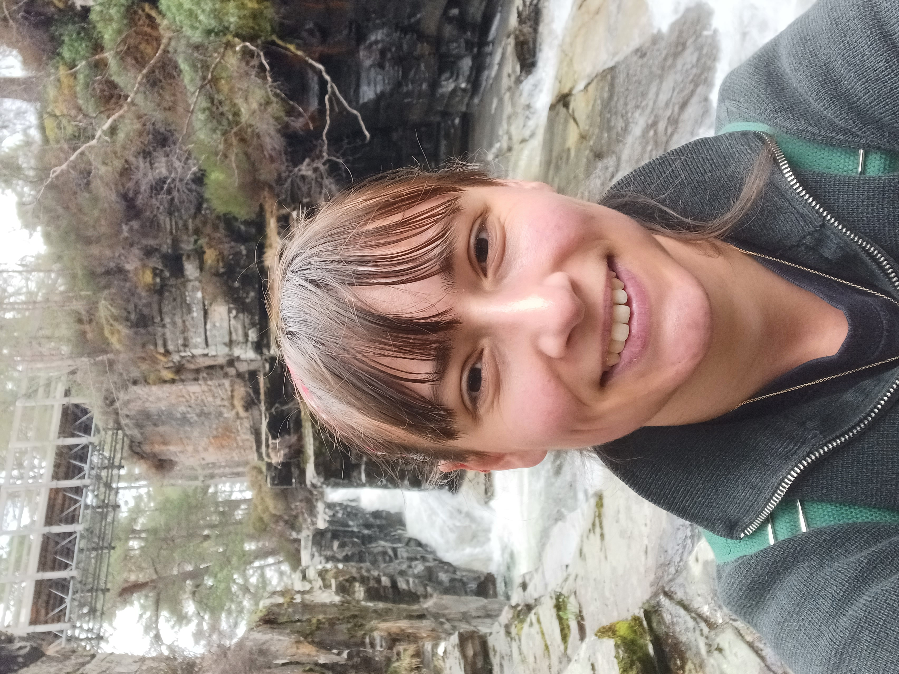

Solar Wind Turbulence
The solar wind is a plasma that expands from the sun out into the solar system. It acts as a laboratory for plasma turbulence with several spacecraft missions such as Solar Orbiter providing in-situ observations of the plasma.
Researcher · University of Birmingham - School of Engineering - SERENE
Welcome to my personal homepage. I am a researcher at the University of Birmingham in the SERENE (Space Environment) group. My work focuses on modelling of ionospheric scintillations. I am interested in dynamical systems and nonlinear phenomena, particularly turbulence in plasma.
This website brings together my current research, publications, presentations and curriculum vitae.

Research
A concise introduction to the questions, methods and wider significance of my research.
My research focuses on dynamic and nonlinear phenomena in plasma. I am particularly interested in understanding turbulence. Specifically, how plasma increases in entropy without collisions, is a problem that fascinates me. I am also invested in introducing and developing new methods into the field that can offer new perspectives.
My current work focuses on scintillation, an analogue to turbulence, in the ionosphere. The broader aim is model and eventually predict strong scintillation for space weather warnings.
The solar wind is a plasma that expands from the sun out into the solar system. It acts as a laboratory for plasma turbulence with several spacecraft missions such as Solar Orbiter providing in-situ observations of the plasma.
Scintillations in the ionosphere can cause errors in GPS positioning. Thus it is important to be able to model and predict strong scintillations. I am developing a global model that reflects seasonal and diurnal changes, as well as dependencies on solar wind parameters.
Research outputs
Papers appear newest first while retaining their chronological publication number.
Curriculum vitae
My academic experience, education, expertise and professional activities.
Last updated: 2026
I am an ionospheric researcher in SERENE at the University of Birmingham. I specialised in time series analysis of turbulence, becoming an expert in wavelet analysis. My research focuses on turbulence in plasmas.
University of Birmingham · School of Engineering · SERENE
Developing a global climatological model of ROTI.
University of Warwick · Department of Physics · CFSA
Fundamental research in solar wind turbulence.
University of Warwick
Thesis: “Wave-packets and coherent structures in solar wind turbulence” · Supervisor: Sandra C. Chapman
University of Aberdeen
First Class Honours. Thesis: "Machine Learning for disordered systems".
My papers, talks and posters are listed on the Publications and presentations page.
Contact
For research enquiries, collaboration or speaking invitations, please contact me by email.